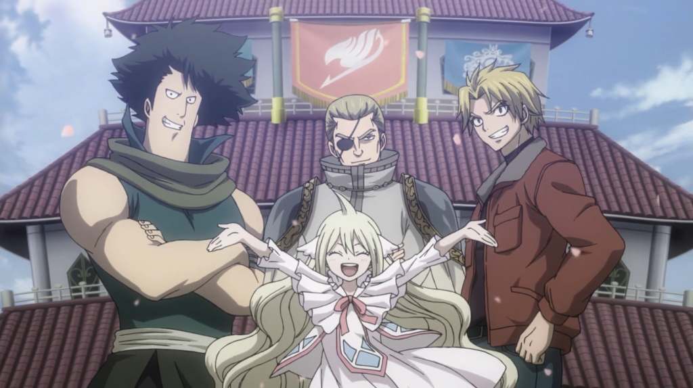
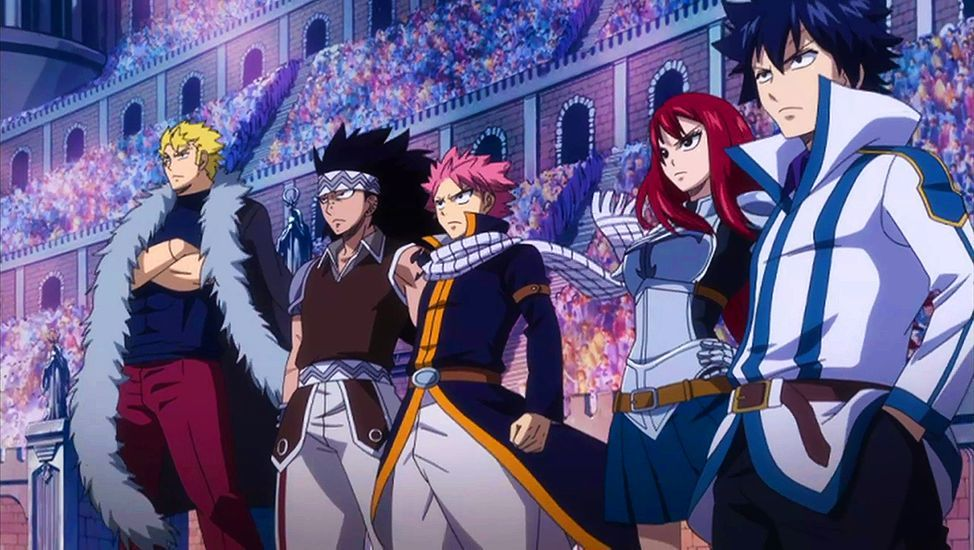
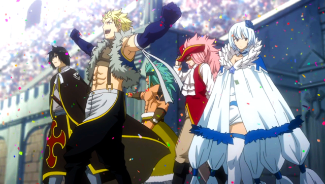
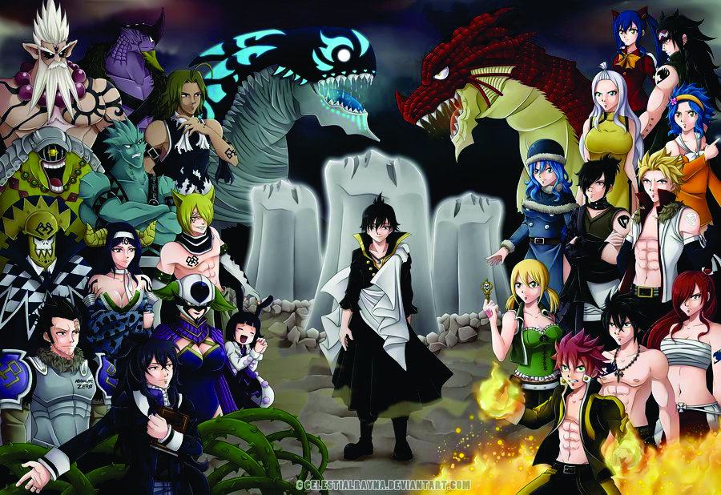
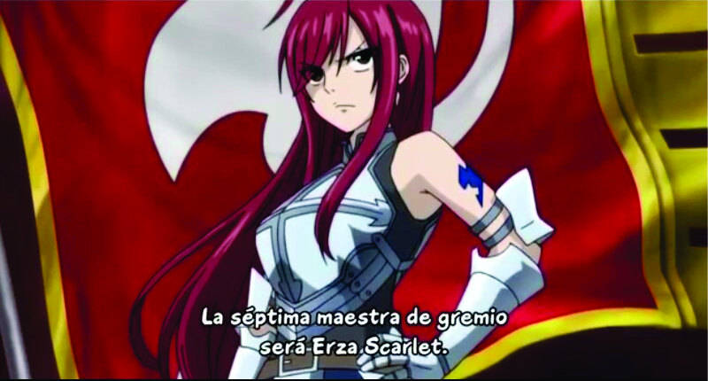

Fue creado por Mavis Vermillion, quien fue la primera maestra del gremio, junto a Pretch Gaebolg, quien fue el segundo maestro, a Yuriy Dreyar (el padre de Makarov) y a Warrod Sequen, quien más tarde sería el cuarto de los dioses de Ishgar (los cuatro magos santos más fuertes), en el año x686
Tras la supuesta destrucción de la Isla Tenrou donde se encontraban todos los magos de Clase S y los magos más fuertes del Gremio, la fuerza de Fairy Tail se redujo significativamente. Cuando los miembros del gremio desparecidos durante el examen a clase S en la Isla Tenrou reaparecieron siete años mas tarde parte de la fuerza y del espíritu del gremio reapareció y decidieron ir otra vez a por el puesto del gremio mas fuerte y presentarse al Daimatou Enbu, que decidiría cual era el gremio mas fuerte de Fiore. Tras unos intensos entrenamientos dos equipos de Fairy Tail se clasificaron para las rondas finales El equipo A de Fairy Tail, formado por: Natsu Dragneel, Gray Fullbuster, Lucy Heartfilia, Erza Scarlet, Wendy Marvell y Elfman Strauss clasificándose con la octava posición
El equipo B de Fairy Tail, formado por: Laxus Dreyar, Mirajane Strauss Juvia Loxar, Gajeel Redfox,Jellal Fernandes haciéndose pasar por Mystogan y Cana Alberona clasificándose con la segunda posición Aunque tras la intervención de Raven Tail se formo un solo equipo de Fairy tail formado por:Laxus Dreyar, Natsu Dragneel,Gajeel Redfox, Gray Fullbuster, Erza Scarlet y Juvia Loxar.
Tras una serie de combates y pruebas Fairy Tail logro vencer los Grandes Juegos Mágicos y recuperar su posición como el gremio mas fuerte de Fiore tras una dura prueba final en la que ninguno de sus miembros fue derrotado, algo que hasta la fecha nunca había sucedido.
Durante el año X791 y el X792, el gremio de Fairy Tail se enfrentó al gremio oscuro más poderoso, Tártaros, todo y que Fairy Tail ganó la batalla, el gremio fue destruido, por lo que el maestro pensó que quizá era el momento de empezar otra era, y decidió disolver el gremio. Natsu junto a Happy y Lucy partieron para reunir otra vez a los miembros, para que Fairy Tail volviera a renacer. Tras la victoria ante Ávatar, todos a excepción de Makarov se han vuelto a reunir para refundar el Gremio.
Mientras todos se encontraban reconstruyendo el gremio bajo la observación de Erza, Levy y Mirajane estaban llenando el formulario adecuado para que la reincorporación del Gremio fuera legal pero tenían problemas en designar a una persona para que fuera el séptimo maestro, y aunque Macao se ofreció para hacerlo, Levy y Mirajane designaron a Erza a ese cargo, al ser la única que podía estremecer al Gremio si se enfadaba, a pesar de que ella decía que no se sentía preparada para tal responsabilidad, todos en Fairy Tail aprobaron la elección de Erza, quien se convirtió en la segunda mujer en ser mestra del gremio, solo después de Mavis.
